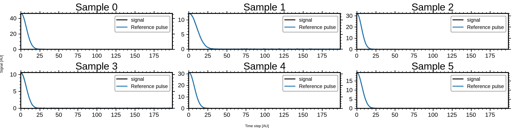
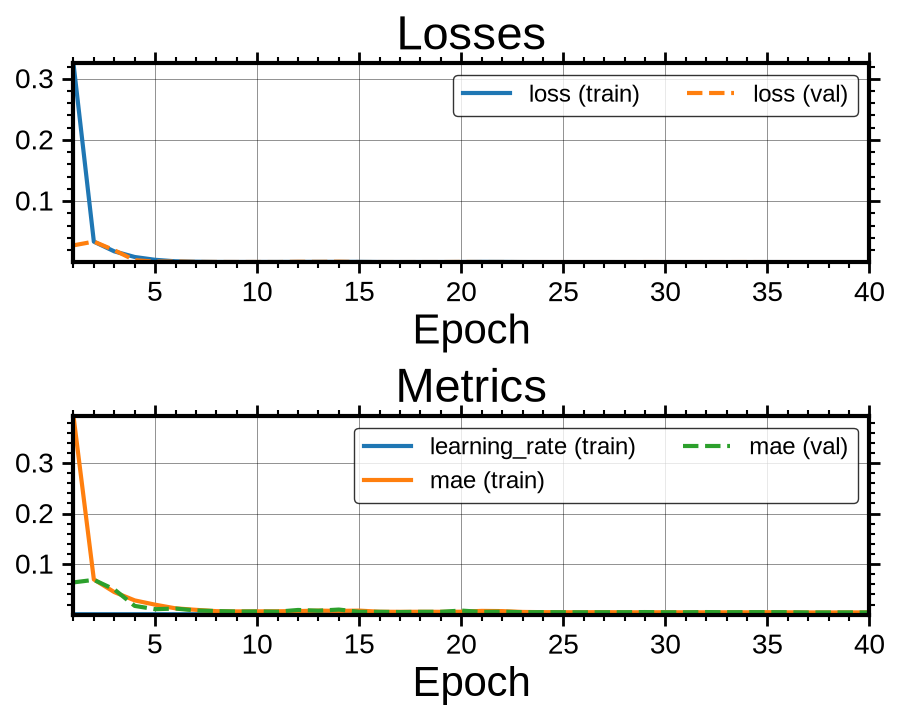

<!DOCTYPE html>


<html lang="en" data-content_root="../" >

  <head>
    <meta charset="utf-8" />
    <meta name="viewport" content="width=device-width, initial-scale=1.0" /><meta name="viewport" content="width=device-width, initial-scale=1" />

    <title>WaveNet Deconvolver: Reconstructing Clean Pulse Traces &#8212; DeepPeak  documentation</title>
  
  
  
  <script data-cfasync="false">
    document.documentElement.dataset.mode = localStorage.getItem("mode") || "";
    document.documentElement.dataset.theme = localStorage.getItem("theme") || "";
  </script>
  <!--
    this give us a css class that will be invisible only if js is disabled
  -->
  <noscript>
    <style>
      .pst-js-only { display: none !important; }

    </style>
  </noscript>
  
  <!-- Loaded before other Sphinx assets -->
  <link href="../_static/styles/theme.css?digest=8878045cc6db502f8baf" rel="stylesheet" />
<link href="../_static/styles/pydata-sphinx-theme.css?digest=8878045cc6db502f8baf" rel="stylesheet" />

    <link rel="stylesheet" type="text/css" href="../_static/pygments.css?v=03e43079" />
    <link rel="stylesheet" type="text/css" href="/opt/hostedtoolcache/Python/3.11.15/x64/lib/python3.11/site-packages/docs/source/_static/default.css" />
    <link rel="stylesheet" type="text/css" href="../_static/sg_gallery.css?v=d2d258e8" />
    <link rel="stylesheet" type="text/css" href="../_static/sg_gallery-binder.css?v=f4aeca0c" />
    <link rel="stylesheet" type="text/css" href="../_static/sg_gallery-dataframe.css?v=2082cf3c" />
    <link rel="stylesheet" type="text/css" href="../_static/sg_gallery-rendered-html.css?v=1277b6f3" />
    <link rel="stylesheet" type="text/css" href="../_static/default.css?v=4340df76" />
  
  <!-- So that users can add custom icons -->
  <script src="../_static/scripts/fontawesome.js?digest=8878045cc6db502f8baf"></script>
  <!-- Pre-loaded scripts that we'll load fully later -->
  <link rel="preload" as="script" href="../_static/scripts/bootstrap.js?digest=8878045cc6db502f8baf" />
<link rel="preload" as="script" href="../_static/scripts/pydata-sphinx-theme.js?digest=8878045cc6db502f8baf" />

    <script src="../_static/documentation_options.js?v=5929fcd5"></script>
    <script src="../_static/doctools.js?v=fd6eb6e6"></script>
    <script src="../_static/sphinx_highlight.js?v=6ffebe34"></script>
    <script>DOCUMENTATION_OPTIONS.pagename = 'gallery/classifier_wavenet';</script>
    <script>
        DOCUMENTATION_OPTIONS.theme_version = '0.16.1';
        DOCUMENTATION_OPTIONS.theme_switcher_json_url = 'https://raw.githubusercontent.com/MartinPdeS/DeepPeak/documentation_page/version_switcher.json';
        DOCUMENTATION_OPTIONS.theme_switcher_version_match = 'v0.1.1';
        DOCUMENTATION_OPTIONS.show_version_warning_banner =
            true;
        </script>
    <link rel="icon" href="../_static/thumbnail.png"/>
    <link rel="index" title="Index" href="../genindex.html" />
    <link rel="search" title="Search" href="../search.html" />
    <link rel="next" title="Core Result Objects: Trace, DetectionResult, and MetricResult" href="core_result_objects.html" />
    <link rel="prev" title="DenseNet Deconvolver: Reconstructing Clean Pulse Traces" href="classifier_dense.html" />
  <meta name="viewport" content="width=device-width, initial-scale=1"/>
  <meta name="docsearch:language" content="en"/>
  <meta name="docsearch:version" content="0.1.1" />
  </head>
  
  
  <body data-bs-spy="scroll" data-bs-target=".bd-toc-nav" data-offset="180" data-bs-root-margin="0px 0px -60%" data-default-mode="">

  
  
  <div id="pst-skip-link" class="skip-link d-print-none"><a href="#main-content">Skip to main content</a></div>
  
  <div id="pst-scroll-pixel-helper"></div>
  
  <button type="button" class="btn rounded-pill" id="pst-back-to-top">
    <i class="fa-solid fa-arrow-up"></i>Back to top</button>

  
  <dialog id="pst-search-dialog">
    
<form class="bd-search d-flex align-items-center"
      action="../search.html"
      method="get">
  <i class="fa-solid fa-magnifying-glass"></i>
  <input type="search"
         class="form-control"
         name="q"
         placeholder="Search the docs ..."
         aria-label="Search the docs ..."
         autocomplete="off"
         autocorrect="off"
         autocapitalize="off"
         spellcheck="false"/>
  <span class="search-button__kbd-shortcut"><kbd class="kbd-shortcut__modifier">Ctrl</kbd>+<kbd>K</kbd></span>
</form>
  </dialog>

  <div class="pst-async-banner-revealer d-none">
  <aside id="bd-header-version-warning" class="d-none d-print-none" aria-label="Version warning"></aside>
</div>

  
    <header class="bd-header navbar navbar-expand-lg bd-navbar d-print-none">
<div class="bd-header__inner bd-page-width">
  <button class="pst-navbar-icon sidebar-toggle primary-toggle" aria-label="Site navigation">
    <span class="fa-solid fa-bars"></span>
  </button>
  
  
  <div class=" navbar-header-items__start">
    
      <div class="navbar-item">

  
    
  

<a class="navbar-brand logo" href="../index.html">
  
  
  
  
  
    
    
      
    
    
    
    
  
  
    <p class="title logo__title">DeepPeak</p>
  
</a></div>
    
  </div>
  
  <div class=" navbar-header-items">
    
    <div class="me-auto navbar-header-items__center">
      
        <div class="navbar-item">
<nav>
  <ul class="bd-navbar-elements navbar-nav">
    
<li class="nav-item ">
  <a class="nav-link nav-internal" href="../getting_started.html">
    Getting started
  </a>
</li>


<li class="nav-item ">
  <a class="nav-link nav-internal" href="../code.html">
    API reference
  </a>
</li>


<li class="nav-item ">
  <a class="nav-link nav-internal" href="../migration.html">
    Migration guide
  </a>
</li>


<li class="nav-item ">
  <a class="nav-link nav-internal" href="../testing.html">
    Testing and reproducibility
  </a>
</li>


<li class="nav-item current active">
  <a class="nav-link nav-internal" href="index.html">
    Examples
  </a>
</li>

            <li class="nav-item dropdown">
                <button class="btn dropdown-toggle nav-item" type="button"
                data-bs-toggle="dropdown" aria-expanded="false"
                aria-controls="pst-nav-more-links">
                    More
                </button>
                <ul id="pst-nav-more-links" class="dropdown-menu">
                    
<li class=" ">
  <a class="nav-link dropdown-item nav-internal" href="../theory.html">
    Theory
  </a>
</li>


<li class=" ">
  <a class="nav-link dropdown-item nav-internal" href="../references.html">
    References
  </a>
</li>

                </ul>
            </li>
            
  </ul>
</nav></div>
      
    </div>
    
    
    <div class="navbar-header-items__end">
      
        <div class="navbar-item navbar-persistent--container">
          

<button class="btn search-button-field search-button__button pst-js-only" title="Search" aria-label="Search" data-bs-placement="bottom" data-bs-toggle="tooltip">
 <i class="fa-solid fa-magnifying-glass"></i>
 <span class="search-button__default-text">Search</span>
 <span class="search-button__kbd-shortcut"><kbd class="kbd-shortcut__modifier">Ctrl</kbd>+<kbd class="kbd-shortcut__modifier">K</kbd></span>
</button>
        </div>
      
      
        <div class="navbar-item">
<div class="version-switcher__container dropdown pst-js-only">
  <button id="pst-version-switcher-button-2"
    type="button"
    class="version-switcher__button btn btn-sm dropdown-toggle"
    data-bs-toggle="dropdown"
    aria-haspopup="listbox"
    aria-controls="pst-version-switcher-list-2"
    aria-label="Version switcher list"
  >
    Choose version  <!-- this text may get changed later by javascript -->
    <span class="caret"></span>
  </button>
  <div id="pst-version-switcher-list-2"
    class="version-switcher__menu dropdown-menu list-group-flush py-0"
    role="listbox" aria-labelledby="pst-version-switcher-button-2">
    <!-- dropdown will be populated by javascript on page load -->
  </div>
</div></div>
      
        <div class="navbar-item"><ul class="navbar-icon-links"
    aria-label="Icon Links">
        <li class="nav-item">
          
          
          
          
          
          
          
          
          <a href="https://github.com/MartinPdeS/DeepPeak" title="GitHub" class="nav-link pst-navbar-icon" rel="noopener" target="_blank" data-bs-toggle="tooltip" data-bs-placement="bottom"><i class="fa-brands fa-github fa-lg" aria-hidden="true"></i>
            <span class="sr-only">GitHub</span></a>
        </li>
        <li class="nav-item">
          
          
          
          
          
          
          
          
          <a href="https://pypi.org/project/DeepPeak/" title="PyPI" class="nav-link pst-navbar-icon" rel="noopener" target="_blank" data-bs-toggle="tooltip" data-bs-placement="bottom"><i class="fa-solid fa-box fa-lg" aria-hidden="true"></i>
            <span class="sr-only">PyPI</span></a>
        </li>
        <li class="nav-item">
          
          
          
          
          
          
          
          
          <a href="https://anaconda.org/MartinPdeS/DeepPeak" title="Anaconda" class="nav-link pst-navbar-icon" rel="noopener" target="_blank" data-bs-toggle="tooltip" data-bs-placement="bottom"><i class="fa-brands fa-python fa-lg" aria-hidden="true"></i>
            <span class="sr-only">Anaconda</span></a>
        </li>
</ul></div>
      
    </div>
    
  </div>
  
  
    <div class="navbar-persistent--mobile">

<button class="btn search-button-field search-button__button pst-js-only" title="Search" aria-label="Search" data-bs-placement="bottom" data-bs-toggle="tooltip">
 <i class="fa-solid fa-magnifying-glass"></i>
 <span class="search-button__default-text">Search</span>
 <span class="search-button__kbd-shortcut"><kbd class="kbd-shortcut__modifier">Ctrl</kbd>+<kbd class="kbd-shortcut__modifier">K</kbd></span>
</button>
    </div>
  

  
    <button class="pst-navbar-icon sidebar-toggle secondary-toggle" aria-label="On this page">
      <span class="fa-solid fa-outdent"></span>
    </button>
  
</div>

    </header>
  

  <div class="bd-container">
    <div class="bd-container__inner bd-page-width">
      
      
      
      <dialog id="pst-primary-sidebar-modal"></dialog>
      <div id="pst-primary-sidebar" class="bd-sidebar-primary bd-sidebar">
        

  
  <div class="sidebar-header-items sidebar-primary__section">
    
    
      <div class="sidebar-header-items__center">
        
          
          
            <div class="navbar-item">
<nav>
  <ul class="bd-navbar-elements navbar-nav">
    
<li class="nav-item ">
  <a class="nav-link nav-internal" href="../getting_started.html">
    Getting started
  </a>
</li>


<li class="nav-item ">
  <a class="nav-link nav-internal" href="../code.html">
    API reference
  </a>
</li>


<li class="nav-item ">
  <a class="nav-link nav-internal" href="../migration.html">
    Migration guide
  </a>
</li>


<li class="nav-item ">
  <a class="nav-link nav-internal" href="../testing.html">
    Testing and reproducibility
  </a>
</li>


<li class="nav-item current active">
  <a class="nav-link nav-internal" href="index.html">
    Examples
  </a>
</li>


<li class="nav-item ">
  <a class="nav-link nav-internal" href="../theory.html">
    Theory
  </a>
</li>


<li class="nav-item ">
  <a class="nav-link nav-internal" href="../references.html">
    References
  </a>
</li>

  </ul>
</nav></div>
          
        
      </div>
    
    
    
      <div class="sidebar-header-items__end">
        
          <div class="navbar-item">
<div class="version-switcher__container dropdown pst-js-only">
  <button id="pst-version-switcher-button-3"
    type="button"
    class="version-switcher__button btn btn-sm dropdown-toggle"
    data-bs-toggle="dropdown"
    aria-haspopup="listbox"
    aria-controls="pst-version-switcher-list-3"
    aria-label="Version switcher list"
  >
    Choose version  <!-- this text may get changed later by javascript -->
    <span class="caret"></span>
  </button>
  <div id="pst-version-switcher-list-3"
    class="version-switcher__menu dropdown-menu list-group-flush py-0"
    role="listbox" aria-labelledby="pst-version-switcher-button-3">
    <!-- dropdown will be populated by javascript on page load -->
  </div>
</div></div>
        
          <div class="navbar-item"><ul class="navbar-icon-links"
    aria-label="Icon Links">
        <li class="nav-item">
          
          
          
          
          
          
          
          
          <a href="https://github.com/MartinPdeS/DeepPeak" title="GitHub" class="nav-link pst-navbar-icon" rel="noopener" target="_blank" data-bs-toggle="tooltip" data-bs-placement="bottom"><i class="fa-brands fa-github fa-lg" aria-hidden="true"></i>
            <span class="sr-only">GitHub</span></a>
        </li>
        <li class="nav-item">
          
          
          
          
          
          
          
          
          <a href="https://pypi.org/project/DeepPeak/" title="PyPI" class="nav-link pst-navbar-icon" rel="noopener" target="_blank" data-bs-toggle="tooltip" data-bs-placement="bottom"><i class="fa-solid fa-box fa-lg" aria-hidden="true"></i>
            <span class="sr-only">PyPI</span></a>
        </li>
        <li class="nav-item">
          
          
          
          
          
          
          
          
          <a href="https://anaconda.org/MartinPdeS/DeepPeak" title="Anaconda" class="nav-link pst-navbar-icon" rel="noopener" target="_blank" data-bs-toggle="tooltip" data-bs-placement="bottom"><i class="fa-brands fa-python fa-lg" aria-hidden="true"></i>
            <span class="sr-only">Anaconda</span></a>
        </li>
</ul></div>
        
      </div>
    
  </div>
  
    <div class="sidebar-primary-items__start sidebar-primary__section">
        <div class="sidebar-primary-item">
<nav class="bd-docs-nav bd-links"
     aria-label="Section Navigation">
  <p class="bd-links__title" role="heading" aria-level="1">Section Navigation</p>
  <div class="bd-toc-item navbar-nav"><ul class="current nav bd-sidenav">
<li class="toctree-l1"><a class="reference internal" href="amplitude_retrieval.html">Amplitude Retrieval for Overlapping Pulses</a></li>
<li class="toctree-l1"><a class="reference internal" href="classical_detection_pipeline.html">Classical Detection Pipeline with Stable Results</a></li>
<li class="toctree-l1"><a class="reference internal" href="classifier_autoencoder.html">U-Net Deconvolver: Reconstructing Clean Pulse Traces</a></li>
<li class="toctree-l1"><a class="reference internal" href="classifier_dense.html">DenseNet Deconvolver: Reconstructing Clean Pulse Traces</a></li>
<li class="toctree-l1 current active"><a class="current reference internal" href="#">WaveNet Deconvolver: Reconstructing Clean Pulse Traces</a></li>
<li class="toctree-l1"><a class="reference internal" href="core_result_objects.html">Core Result Objects: Trace, DetectionResult, and MetricResult</a></li>
<li class="toctree-l1"><a class="reference internal" href="data_generation.html">Generating and Visualizing Signal Data</a></li>
<li class="toctree-l1"><a class="reference internal" href="data_generation_custom_kernel.html">Generating data With a Custom Kernel</a></li>
<li class="toctree-l1"><a class="reference internal" href="noise_and_pulse_analysis.html">Noise and Pulse-Shape Analysis</a></li>
<li class="toctree-l1"><a class="reference internal" href="non_maximum_suppression.html">Non-Maximum Suppression for Gaussian Pulse Detection</a></li>
</ul>
</div>
</nav></div>
    </div>
  
  
  <div class="sidebar-primary-items__end sidebar-primary__section">
      <div class="sidebar-primary-item">
<div id="ethical-ad-placement"
      class="flat"
      data-ea-publisher="readthedocs"
      data-ea-type="readthedocs-sidebar"
      data-ea-manual="true">
</div></div>
  </div>


      </div>
      
      <main id="main-content" class="bd-main" role="main">
        
        
          <div class="bd-content">
            <div class="bd-article-container">
              
              <div class="bd-header-article d-print-none">
<div class="header-article-items header-article__inner">
  
    <div class="header-article-items__start">
      
        <div class="header-article-item">

<nav aria-label="Breadcrumb" class="d-print-none">
  <ul class="bd-breadcrumbs">
    
    <li class="breadcrumb-item breadcrumb-home">
      <a href="../index.html" class="nav-link" aria-label="Home">
        <i class="fa-solid fa-home"></i>
      </a>
    </li>
    
    <li class="breadcrumb-item"><a href="index.html" class="nav-link">Examples</a></li>
    
    <li class="breadcrumb-item active" aria-current="page"><span class="ellipsis">WaveNet Deconvolver: Reconstructing Clean Pulse Traces</span></li>
  </ul>
</nav>
</div>
      
    </div>
  
  
</div>
</div>
              
              
              
                
<div id="searchbox"></div>
                <article class="bd-article">
                  
  <div class="sphx-glr-download-link-note admonition note">
<p class="admonition-title">Note</p>
<p><a class="reference internal" href="#sphx-glr-download-gallery-classifier-wavenet-py"><span class="std std-ref">Go to the end</span></a>
to download the full example code.</p>
</div>
<section class="sphx-glr-example-title" id="wavenet-deconvolver-reconstructing-clean-pulse-traces">
<span id="sphx-glr-gallery-classifier-wavenet-py"></span><h1>WaveNet Deconvolver: Reconstructing Clean Pulse Traces<a class="headerlink" href="#wavenet-deconvolver-reconstructing-clean-pulse-traces" title="Link to this heading">#</a></h1>
<p>This example demonstrates how to train DeepPeak’s WaveNet as a deconvolver.</p>
<p>We will:
- Generate a dataset of noisy signals with random Gaussian peaks
- Build and train a WaveNet reconstruction model
- Visualize the training process and reconstructed signals</p>
<div class="admonition note">
<p class="admonition-title">Note</p>
<p>This example is fully reproducible and suitable for Sphinx-Gallery documentation.</p>
</div>
<section id="imports-and-reproducibility">
<h2>Imports and reproducibility<a class="headerlink" href="#imports-and-reproducibility" title="Link to this heading">#</a></h2>
<div class="highlight-Python notranslate"><div class="highlight"><pre><span></span><span class="kn">import</span><span class="w"> </span><span class="nn">numpy</span><span class="w"> </span><span class="k">as</span><span class="w"> </span><span class="nn">np</span>

<span class="kn">from</span><span class="w"> </span><span class="nn">DeepPeak.models</span><span class="w"> </span><span class="kn">import</span> <span class="n">TrainingConfig</span><span class="p">,</span> <span class="n">WaveNet</span>
<span class="kn">from</span><span class="w"> </span><span class="nn">DeepPeak.generation</span><span class="w"> </span><span class="kn">import</span> <span class="n">SignalGenerator</span>
<span class="kn">from</span><span class="w"> </span><span class="nn">DeepPeak</span><span class="w"> </span><span class="kn">import</span> <span class="n">Gaussian</span><span class="p">,</span> <span class="n">UniformCount</span>

<span class="n">np</span><span class="o">.</span><span class="n">random</span><span class="o">.</span><span class="n">seed</span><span class="p">(</span><span class="mi">42</span><span class="p">)</span>
</pre></div>
</div>
</section>
<section id="generate-synthetic-dataset">
<h2>Generate synthetic dataset<a class="headerlink" href="#generate-synthetic-dataset" title="Link to this heading">#</a></h2>
<div class="highlight-Python notranslate"><div class="highlight"><pre><span></span><span class="n">NUM_PEAKS</span> <span class="o">=</span> <span class="mi">3</span>
<span class="n">SEQUENCE_LENGTH</span> <span class="o">=</span> <span class="mi">200</span>

<span class="n">pulse_kernel</span> <span class="o">=</span> <span class="n">Gaussian</span><span class="p">(</span>
    <span class="n">amplitude</span><span class="o">=</span><span class="p">(</span><span class="mi">10</span><span class="p">,</span> <span class="mi">20</span><span class="p">),</span>
    <span class="n">position</span><span class="o">=</span><span class="p">(</span><span class="mf">0.1</span><span class="p">,</span> <span class="mf">0.9</span><span class="p">),</span>
    <span class="n">width</span><span class="o">=</span><span class="p">(</span><span class="mi">5</span><span class="p">,</span> <span class="mi">10</span><span class="p">),</span>
<span class="p">)</span>

<span class="n">generator</span> <span class="o">=</span> <span class="n">SignalGenerator</span><span class="p">(</span><span class="n">sequence_length</span><span class="o">=</span><span class="n">SEQUENCE_LENGTH</span><span class="p">)</span>

<span class="n">dataset</span> <span class="o">=</span> <span class="n">generator</span><span class="o">.</span><span class="n">generate</span><span class="p">(</span>
    <span class="n">n_samples</span><span class="o">=</span><span class="mi">1000</span><span class="p">,</span>
    <span class="n">kernel</span><span class="o">=</span><span class="n">pulse_kernel</span><span class="p">,</span>
    <span class="n">peak_count</span><span class="o">=</span><span class="n">UniformCount</span><span class="p">(</span><span class="n">bounds</span><span class="o">=</span><span class="p">(</span><span class="mi">1</span><span class="p">,</span> <span class="n">NUM_PEAKS</span><span class="p">)),</span>
    <span class="n">noise_std</span><span class="o">=</span><span class="mf">0.03</span><span class="p">,</span>
    <span class="n">categorical_peak_count</span><span class="o">=</span><span class="kc">False</span><span class="p">,</span>
<span class="p">)</span>
</pre></div>
</div>
</section>
<section id="visualize-observed-and-clean-example-signals">
<h2>Visualize observed and clean example signals<a class="headerlink" href="#visualize-observed-and-clean-example-signals" title="Link to this heading">#</a></h2>
<div class="highlight-Python notranslate"><div class="highlight"><pre><span></span><span class="n">_</span> <span class="o">=</span> <span class="n">dataset</span><span class="o">.</span><span class="n">plot</span><span class="p">(</span>
    <span class="n">number_of_samples</span><span class="o">=</span><span class="mi">6</span><span class="p">,</span>
    <span class="n">number_of_columns</span><span class="o">=</span><span class="mi">3</span><span class="p">,</span>
    <span class="n">reference_pulse_trace</span><span class="o">=</span><span class="n">dataset</span><span class="o">.</span><span class="n">clean_signals</span><span class="p">,</span>
<span class="p">)</span>
</pre></div>
</div>
</section>
<section id="build-and-summarize-the-wavenet-deconvolver">
<h2>Build and summarize the WaveNet deconvolver<a class="headerlink" href="#build-and-summarize-the-wavenet-deconvolver" title="Link to this heading">#</a></h2>
<div class="highlight-Python notranslate"><div class="highlight"><pre><span></span><span class="n">wavenet</span> <span class="o">=</span> <span class="n">WaveNet</span><span class="p">(</span>
    <span class="n">sequence_length</span><span class="o">=</span><span class="n">SEQUENCE_LENGTH</span><span class="p">,</span>
    <span class="n">num_filters</span><span class="o">=</span><span class="mi">64</span><span class="p">,</span>
    <span class="n">num_dilation_layers</span><span class="o">=</span><span class="mi">3</span><span class="p">,</span>
    <span class="n">kernel_size</span><span class="o">=</span><span class="mi">4</span><span class="p">,</span>
    <span class="n">optimizer</span><span class="o">=</span><span class="s2">&quot;adam&quot;</span><span class="p">,</span>
    <span class="n">output_activation</span><span class="o">=</span><span class="s2">&quot;linear&quot;</span><span class="p">,</span>
    <span class="n">loss</span><span class="o">=</span><span class="s2">&quot;huber&quot;</span><span class="p">,</span>
    <span class="n">metrics</span><span class="o">=</span><span class="p">[</span><span class="s2">&quot;mae&quot;</span><span class="p">],</span>
<span class="p">)</span>

<span class="n">wavenet</span><span class="o">.</span><span class="n">build</span><span class="p">()</span>
</pre></div>
</div>
<div class="sphx-glr-script-out highlight-none notranslate"><div class="highlight"><pre><span></span>&lt;Functional name=WaveNetDeconvolver, built=True&gt;
</pre></div>
</div>
</section>
<section id="train-against-clean-pulse-traces">
<h2>Train against clean pulse traces<a class="headerlink" href="#train-against-clean-pulse-traces" title="Link to this heading">#</a></h2>
<div class="highlight-Python notranslate"><div class="highlight"><pre><span></span><span class="n">history</span> <span class="o">=</span> <span class="n">wavenet</span><span class="o">.</span><span class="n">fit</span><span class="p">(</span>
    <span class="n">dataset</span><span class="o">.</span><span class="n">signals</span><span class="p">,</span>
    <span class="n">dataset</span><span class="o">.</span><span class="n">clean_signals</span><span class="p">[</span><span class="o">...</span><span class="p">,</span> <span class="kc">None</span><span class="p">],</span>
    <span class="n">config</span><span class="o">=</span><span class="n">TrainingConfig</span><span class="p">(</span><span class="n">epochs</span><span class="o">=</span><span class="mi">40</span><span class="p">,</span> <span class="n">batch_size</span><span class="o">=</span><span class="mi">64</span><span class="p">,</span> <span class="n">validation_split</span><span class="o">=</span><span class="mf">0.2</span><span class="p">),</span>
<span class="p">)</span>
</pre></div>
</div>
<div class="sphx-glr-script-out highlight-none notranslate"><div class="highlight"><pre><span></span>Epoch 1/40

 1/13 ━━━━━━━━━━━━━━━━━━━━ 26s 2s/step - loss: 1.4036 - mae: 1.4692
 2/13 ━━━━━━━━━━━━━━━━━━━━ 0s 51ms/step - loss: 1.0610 - mae: 1.1317
 3/13 ━━━━━━━━━━━━━━━━━━━━ 0s 51ms/step - loss: 0.7676 - mae: 0.8507
 4/13 ━━━━━━━━━━━━━━━━━━━━ 0s 51ms/step - loss: 0.7075 - mae: 0.7968
 5/13 ━━━━━━━━━━━━━━━━━━━━ 0s 51ms/step - loss: 0.6291 - mae: 0.7167
 7/13 ━━━━━━━━━━━━━━━━━━━━ 0s 51ms/step - loss: 0.4804 - mae: 0.5589
 9/13 ━━━━━━━━━━━━━━━━━━━━ 0s 50ms/step - loss: 0.4196 - mae: 0.4966
11/13 ━━━━━━━━━━━━━━━━━━━━ 0s 50ms/step - loss: 0.3546 - mae: 0.4254
13/13 ━━━━━━━━━━━━━━━━━━━━ 0s 48ms/step - loss: 0.3253 - mae: 0.3935
13/13 ━━━━━━━━━━━━━━━━━━━━ 3s 73ms/step - loss: 0.3253 - mae: 0.3935 - val_loss: 0.0275 - val_mae: 0.0639 - learning_rate: 0.0010
Epoch 2/40

 1/13 ━━━━━━━━━━━━━━━━━━━━ 0s 63ms/step - loss: 0.0215 - mae: 0.0576
 2/13 ━━━━━━━━━━━━━━━━━━━━ 0s 51ms/step - loss: 0.0336 - mae: 0.0710
 4/13 ━━━━━━━━━━━━━━━━━━━━ 0s 50ms/step - loss: 0.0474 - mae: 0.0876
 6/13 ━━━━━━━━━━━━━━━━━━━━ 0s 50ms/step - loss: 0.0409 - mae: 0.0792
 7/13 ━━━━━━━━━━━━━━━━━━━━ 0s 51ms/step - loss: 0.0408 - mae: 0.0789
 8/13 ━━━━━━━━━━━━━━━━━━━━ 0s 51ms/step - loss: 0.0390 - mae: 0.0760
 9/13 ━━━━━━━━━━━━━━━━━━━━ 0s 51ms/step - loss: 0.0366 - mae: 0.0731
10/13 ━━━━━━━━━━━━━━━━━━━━ 0s 51ms/step - loss: 0.0365 - mae: 0.0735
11/13 ━━━━━━━━━━━━━━━━━━━━ 0s 51ms/step - loss: 0.0359 - mae: 0.0733
13/13 ━━━━━━━━━━━━━━━━━━━━ 0s 48ms/step - loss: 0.0336 - mae: 0.0698
13/13 ━━━━━━━━━━━━━━━━━━━━ 1s 55ms/step - loss: 0.0336 - mae: 0.0698 - val_loss: 0.0337 - val_mae: 0.0689 - learning_rate: 0.0010
Epoch 3/40

 1/13 ━━━━━━━━━━━━━━━━━━━━ 7s 600ms/step - loss: 0.0327 - mae: 0.0681
 3/13 ━━━━━━━━━━━━━━━━━━━━ 0s 50ms/step - loss: 0.0205 - mae: 0.0486 
 5/13 ━━━━━━━━━━━━━━━━━━━━ 0s 50ms/step - loss: 0.0230 - mae: 0.0503
 7/13 ━━━━━━━━━━━━━━━━━━━━ 0s 49ms/step - loss: 0.0212 - mae: 0.0485
 8/13 ━━━━━━━━━━━━━━━━━━━━ 0s 50ms/step - loss: 0.0208 - mae: 0.0480
10/13 ━━━━━━━━━━━━━━━━━━━━ 0s 49ms/step - loss: 0.0195 - mae: 0.0471
12/13 ━━━━━━━━━━━━━━━━━━━━ 0s 49ms/step - loss: 0.0181 - mae: 0.0453
13/13 ━━━━━━━━━━━━━━━━━━━━ 1s 55ms/step - loss: 0.0177 - mae: 0.0448 - val_loss: 0.0196 - val_mae: 0.0501 - learning_rate: 0.0010
Epoch 4/40

 1/13 ━━━━━━━━━━━━━━━━━━━━ 0s 62ms/step - loss: 0.0188 - mae: 0.0498
 2/13 ━━━━━━━━━━━━━━━━━━━━ 0s 50ms/step - loss: 0.0126 - mae: 0.0382
 4/13 ━━━━━━━━━━━━━━━━━━━━ 0s 50ms/step - loss: 0.0124 - mae: 0.0365
 6/13 ━━━━━━━━━━━━━━━━━━━━ 0s 50ms/step - loss: 0.0110 - mae: 0.0333
 7/13 ━━━━━━━━━━━━━━━━━━━━ 0s 50ms/step - loss: 0.0111 - mae: 0.0333
 9/13 ━━━━━━━━━━━━━━━━━━━━ 0s 50ms/step - loss: 0.0099 - mae: 0.0309
11/13 ━━━━━━━━━━━━━━━━━━━━ 0s 50ms/step - loss: 0.0090 - mae: 0.0293
13/13 ━━━━━━━━━━━━━━━━━━━━ 0s 48ms/step - loss: 0.0085 - mae: 0.0283
13/13 ━━━━━━━━━━━━━━━━━━━━ 1s 55ms/step - loss: 0.0085 - mae: 0.0283 - val_loss: 0.0033 - val_mae: 0.0174 - learning_rate: 0.0010
Epoch 5/40

 1/13 ━━━━━━━━━━━━━━━━━━━━ 7s 608ms/step - loss: 0.0039 - mae: 0.0185
 2/13 ━━━━━━━━━━━━━━━━━━━━ 0s 50ms/step - loss: 0.0046 - mae: 0.0208 
 4/13 ━━━━━━━━━━━━━━━━━━━━ 0s 50ms/step - loss: 0.0040 - mae: 0.0193
 6/13 ━━━━━━━━━━━━━━━━━━━━ 0s 50ms/step - loss: 0.0042 - mae: 0.0198
 7/13 ━━━━━━━━━━━━━━━━━━━━ 0s 50ms/step - loss: 0.0041 - mae: 0.0196
 9/13 ━━━━━━━━━━━━━━━━━━━━ 0s 50ms/step - loss: 0.0040 - mae: 0.0198
10/13 ━━━━━━━━━━━━━━━━━━━━ 0s 51ms/step - loss: 0.0041 - mae: 0.0202
12/13 ━━━━━━━━━━━━━━━━━━━━ 0s 50ms/step - loss: 0.0039 - mae: 0.0199
13/13 ━━━━━━━━━━━━━━━━━━━━ 1s 56ms/step - loss: 0.0039 - mae: 0.0199 - val_loss: 9.8317e-04 - val_mae: 0.0109 - learning_rate: 0.0010
Epoch 6/40

 1/13 ━━━━━━━━━━━━━━━━━━━━ 7s 591ms/step - loss: 8.3296e-04 - mae: 0.0101
 2/13 ━━━━━━━━━━━━━━━━━━━━ 0s 57ms/step - loss: 0.0022 - mae: 0.0147     
 3/13 ━━━━━━━━━━━━━━━━━━━━ 0s 54ms/step - loss: 0.0019 - mae: 0.0139
 5/13 ━━━━━━━━━━━━━━━━━━━━ 0s 52ms/step - loss: 0.0018 - mae: 0.0138
 6/13 ━━━━━━━━━━━━━━━━━━━━ 0s 51ms/step - loss: 0.0017 - mae: 0.0132
 7/13 ━━━━━━━━━━━━━━━━━━━━ 0s 51ms/step - loss: 0.0018 - mae: 0.0136
 9/13 ━━━━━━━━━━━━━━━━━━━━ 0s 51ms/step - loss: 0.0016 - mae: 0.0133
11/13 ━━━━━━━━━━━━━━━━━━━━ 0s 50ms/step - loss: 0.0015 - mae: 0.0128
13/13 ━━━━━━━━━━━━━━━━━━━━ 0s 48ms/step - loss: 0.0014 - mae: 0.0126
13/13 ━━━━━━━━━━━━━━━━━━━━ 1s 55ms/step - loss: 0.0014 - mae: 0.0126 - val_loss: 0.0011 - val_mae: 0.0122 - learning_rate: 0.0010
Epoch 7/40

 1/13 ━━━━━━━━━━━━━━━━━━━━ 0s 62ms/step - loss: 0.0014 - mae: 0.0126
 3/13 ━━━━━━━━━━━━━━━━━━━━ 0s 50ms/step - loss: 0.0011 - mae: 0.0111
 5/13 ━━━━━━━━━━━━━━━━━━━━ 0s 50ms/step - loss: 9.3923e-04 - mae: 0.0106
 7/13 ━━━━━━━━━━━━━━━━━━━━ 0s 49ms/step - loss: 8.7833e-04 - mae: 0.0103
 9/13 ━━━━━━━━━━━━━━━━━━━━ 0s 49ms/step - loss: 8.1237e-04 - mae: 0.0101
11/13 ━━━━━━━━━━━━━━━━━━━━ 0s 49ms/step - loss: 7.5595e-04 - mae: 0.0099
13/13 ━━━━━━━━━━━━━━━━━━━━ 0s 47ms/step - loss: 7.2555e-04 - mae: 0.0097
13/13 ━━━━━━━━━━━━━━━━━━━━ 1s 55ms/step - loss: 7.2555e-04 - mae: 0.0097 - val_loss: 4.5652e-04 - val_mae: 0.0085 - learning_rate: 0.0010
Epoch 8/40

 1/13 ━━━━━━━━━━━━━━━━━━━━ 0s 63ms/step - loss: 4.7660e-04 - mae: 0.0084
 2/13 ━━━━━━━━━━━━━━━━━━━━ 0s 50ms/step - loss: 4.2389e-04 - mae: 0.0077
 4/13 ━━━━━━━━━━━━━━━━━━━━ 0s 49ms/step - loss: 4.0163e-04 - mae: 0.0075
 6/13 ━━━━━━━━━━━━━━━━━━━━ 0s 49ms/step - loss: 3.9639e-04 - mae: 0.0074
 8/13 ━━━━━━━━━━━━━━━━━━━━ 0s 49ms/step - loss: 3.6242e-04 - mae: 0.0071
10/13 ━━━━━━━━━━━━━━━━━━━━ 0s 49ms/step - loss: 3.4903e-04 - mae: 0.0071
12/13 ━━━━━━━━━━━━━━━━━━━━ 0s 49ms/step - loss: 3.4245e-04 - mae: 0.0070
13/13 ━━━━━━━━━━━━━━━━━━━━ 1s 54ms/step - loss: 3.4023e-04 - mae: 0.0070 - val_loss: 3.6774e-04 - val_mae: 0.0072 - learning_rate: 0.0010
Epoch 9/40

 1/13 ━━━━━━━━━━━━━━━━━━━━ 0s 63ms/step - loss: 3.2702e-04 - mae: 0.0070
 3/13 ━━━━━━━━━━━━━━━━━━━━ 0s 49ms/step - loss: 2.8886e-04 - mae: 0.0066
 5/13 ━━━━━━━━━━━━━━━━━━━━ 0s 49ms/step - loss: 3.1179e-04 - mae: 0.0069
 7/13 ━━━━━━━━━━━━━━━━━━━━ 0s 49ms/step - loss: 3.0385e-04 - mae: 0.0067
 9/13 ━━━━━━━━━━━━━━━━━━━━ 0s 49ms/step - loss: 2.9656e-04 - mae: 0.0066
11/13 ━━━━━━━━━━━━━━━━━━━━ 0s 49ms/step - loss: 2.9487e-04 - mae: 0.0066
13/13 ━━━━━━━━━━━━━━━━━━━━ 0s 47ms/step - loss: 2.8943e-04 - mae: 0.0066
13/13 ━━━━━━━━━━━━━━━━━━━━ 1s 55ms/step - loss: 2.8943e-04 - mae: 0.0066 - val_loss: 2.8491e-04 - val_mae: 0.0063 - learning_rate: 0.0010
Epoch 10/40

 1/13 ━━━━━━━━━━━━━━━━━━━━ 0s 61ms/step - loss: 2.4937e-04 - mae: 0.0061
 3/13 ━━━━━━━━━━━━━━━━━━━━ 0s 49ms/step - loss: 2.3750e-04 - mae: 0.0061
 5/13 ━━━━━━━━━━━━━━━━━━━━ 0s 49ms/step - loss: 2.9157e-04 - mae: 0.0065
 7/13 ━━━━━━━━━━━━━━━━━━━━ 0s 49ms/step - loss: 2.9999e-04 - mae: 0.0066
 9/13 ━━━━━━━━━━━━━━━━━━━━ 0s 49ms/step - loss: 2.9588e-04 - mae: 0.0066
11/13 ━━━━━━━━━━━━━━━━━━━━ 0s 49ms/step - loss: 3.0541e-04 - mae: 0.0067
12/13 ━━━━━━━━━━━━━━━━━━━━ 0s 49ms/step - loss: 3.0125e-04 - mae: 0.0067
13/13 ━━━━━━━━━━━━━━━━━━━━ 1s 54ms/step - loss: 2.9796e-04 - mae: 0.0066 - val_loss: 3.2670e-04 - val_mae: 0.0065 - learning_rate: 0.0010
Epoch 11/40

 1/13 ━━━━━━━━━━━━━━━━━━━━ 0s 62ms/step - loss: 3.5248e-04 - mae: 0.0068
 2/13 ━━━━━━━━━━━━━━━━━━━━ 0s 52ms/step - loss: 3.4636e-04 - mae: 0.0069
 4/13 ━━━━━━━━━━━━━━━━━━━━ 0s 50ms/step - loss: 3.5453e-04 - mae: 0.0073
 6/13 ━━━━━━━━━━━━━━━━━━━━ 0s 50ms/step - loss: 3.4163e-04 - mae: 0.0071
 8/13 ━━━━━━━━━━━━━━━━━━━━ 0s 50ms/step - loss: 3.3451e-04 - mae: 0.0069
10/13 ━━━━━━━━━━━━━━━━━━━━ 0s 49ms/step - loss: 3.2486e-04 - mae: 0.0069
12/13 ━━━━━━━━━━━━━━━━━━━━ 0s 49ms/step - loss: 3.2328e-04 - mae: 0.0068
13/13 ━━━━━━━━━━━━━━━━━━━━ 1s 55ms/step - loss: 3.2192e-04 - mae: 0.0068 - val_loss: 2.4584e-04 - val_mae: 0.0060 - learning_rate: 0.0010
Epoch 12/40

 1/13 ━━━━━━━━━━━━━━━━━━━━ 0s 61ms/step - loss: 2.7230e-04 - mae: 0.0061
 3/13 ━━━━━━━━━━━━━━━━━━━━ 0s 49ms/step - loss: 2.8974e-04 - mae: 0.0066
 5/13 ━━━━━━━━━━━━━━━━━━━━ 0s 49ms/step - loss: 2.8313e-04 - mae: 0.0064
 7/13 ━━━━━━━━━━━━━━━━━━━━ 0s 49ms/step - loss: 2.7568e-04 - mae: 0.0063
 9/13 ━━━━━━━━━━━━━━━━━━━━ 0s 49ms/step - loss: 3.7140e-04 - mae: 0.0071
11/13 ━━━━━━━━━━━━━━━━━━━━ 0s 49ms/step - loss: 3.8834e-04 - mae: 0.0073
13/13 ━━━━━━━━━━━━━━━━━━━━ 0s 47ms/step - loss: 3.9314e-04 - mae: 0.0072
13/13 ━━━━━━━━━━━━━━━━━━━━ 1s 54ms/step - loss: 3.9314e-04 - mae: 0.0072 - val_loss: 6.6477e-04 - val_mae: 0.0094 - learning_rate: 0.0010
Epoch 13/40

 1/13 ━━━━━━━━━━━━━━━━━━━━ 0s 62ms/step - loss: 5.6014e-04 - mae: 0.0089
 2/13 ━━━━━━━━━━━━━━━━━━━━ 0s 51ms/step - loss: 4.6549e-04 - mae: 0.0080
 3/13 ━━━━━━━━━━━━━━━━━━━━ 0s 50ms/step - loss: 5.9262e-04 - mae: 0.0089
 5/13 ━━━━━━━━━━━━━━━━━━━━ 0s 50ms/step - loss: 5.4548e-04 - mae: 0.0085
 7/13 ━━━━━━━━━━━━━━━━━━━━ 0s 50ms/step - loss: 5.2448e-04 - mae: 0.0083
 9/13 ━━━━━━━━━━━━━━━━━━━━ 0s 49ms/step - loss: 4.9736e-04 - mae: 0.0081
11/13 ━━━━━━━━━━━━━━━━━━━━ 0s 49ms/step - loss: 4.8554e-04 - mae: 0.0080
13/13 ━━━━━━━━━━━━━━━━━━━━ 0s 47ms/step - loss: 4.8882e-04 - mae: 0.0081
13/13 ━━━━━━━━━━━━━━━━━━━━ 1s 54ms/step - loss: 4.8882e-04 - mae: 0.0081 - val_loss: 5.1745e-04 - val_mae: 0.0080 - learning_rate: 0.0010
Epoch 14/40

 1/13 ━━━━━━━━━━━━━━━━━━━━ 0s 62ms/step - loss: 4.7978e-04 - mae: 0.0077
 3/13 ━━━━━━━━━━━━━━━━━━━━ 0s 49ms/step - loss: 4.1756e-04 - mae: 0.0074
 5/13 ━━━━━━━━━━━━━━━━━━━━ 0s 49ms/step - loss: 4.1609e-04 - mae: 0.0073
 7/13 ━━━━━━━━━━━━━━━━━━━━ 0s 49ms/step - loss: 4.1926e-04 - mae: 0.0073
 9/13 ━━━━━━━━━━━━━━━━━━━━ 0s 49ms/step - loss: 4.5566e-04 - mae: 0.0076
11/13 ━━━━━━━━━━━━━━━━━━━━ 0s 49ms/step - loss: 4.4415e-04 - mae: 0.0075
13/13 ━━━━━━━━━━━━━━━━━━━━ 0s 47ms/step - loss: 4.3947e-04 - mae: 0.0076
13/13 ━━━━━━━━━━━━━━━━━━━━ 1s 54ms/step - loss: 4.3947e-04 - mae: 0.0076 - val_loss: 7.9568e-04 - val_mae: 0.0102 - learning_rate: 0.0010
Epoch 15/40

 1/13 ━━━━━━━━━━━━━━━━━━━━ 0s 61ms/step - loss: 6.6008e-04 - mae: 0.0093
 3/13 ━━━━━━━━━━━━━━━━━━━━ 0s 49ms/step - loss: 6.2013e-04 - mae: 0.0089
 5/13 ━━━━━━━━━━━━━━━━━━━━ 0s 49ms/step - loss: 5.6004e-04 - mae: 0.0083
 7/13 ━━━━━━━━━━━━━━━━━━━━ 0s 49ms/step - loss: 5.2926e-04 - mae: 0.0083
 8/13 ━━━━━━━━━━━━━━━━━━━━ 0s 50ms/step - loss: 5.4137e-04 - mae: 0.0084
10/13 ━━━━━━━━━━━━━━━━━━━━ 0s 49ms/step - loss: 5.4860e-04 - mae: 0.0084
12/13 ━━━━━━━━━━━━━━━━━━━━ 0s 49ms/step - loss: 5.2245e-04 - mae: 0.0081
13/13 ━━━━━━━━━━━━━━━━━━━━ 1s 55ms/step - loss: 5.1622e-04 - mae: 0.0081 - val_loss: 2.4082e-04 - val_mae: 0.0058 - learning_rate: 0.0010
Epoch 16/40

 1/13 ━━━━━━━━━━━━━━━━━━━━ 0s 62ms/step - loss: 2.1185e-04 - mae: 0.0056
 3/13 ━━━━━━━━━━━━━━━━━━━━ 0s 49ms/step - loss: 2.8340e-04 - mae: 0.0063
 5/13 ━━━━━━━━━━━━━━━━━━━━ 0s 49ms/step - loss: 2.8303e-04 - mae: 0.0063
 7/13 ━━━━━━━━━━━━━━━━━━━━ 0s 49ms/step - loss: 2.7896e-04 - mae: 0.0061
 9/13 ━━━━━━━━━━━━━━━━━━━━ 0s 49ms/step - loss: 2.6603e-04 - mae: 0.0060
11/13 ━━━━━━━━━━━━━━━━━━━━ 0s 49ms/step - loss: 2.5798e-04 - mae: 0.0059
13/13 ━━━━━━━━━━━━━━━━━━━━ 0s 47ms/step - loss: 2.5580e-04 - mae: 0.0059
13/13 ━━━━━━━━━━━━━━━━━━━━ 1s 54ms/step - loss: 2.5580e-04 - mae: 0.0059 - val_loss: 2.3902e-04 - val_mae: 0.0057 - learning_rate: 0.0010
Epoch 17/40

 1/13 ━━━━━━━━━━━━━━━━━━━━ 0s 61ms/step - loss: 2.5868e-04 - mae: 0.0059
 3/13 ━━━━━━━━━━━━━━━━━━━━ 0s 49ms/step - loss: 2.2204e-04 - mae: 0.0056
 5/13 ━━━━━━━━━━━━━━━━━━━━ 0s 49ms/step - loss: 2.1362e-04 - mae: 0.0055
 7/13 ━━━━━━━━━━━━━━━━━━━━ 0s 49ms/step - loss: 2.3213e-04 - mae: 0.0057
 9/13 ━━━━━━━━━━━━━━━━━━━━ 0s 49ms/step - loss: 2.3515e-04 - mae: 0.0057
11/13 ━━━━━━━━━━━━━━━━━━━━ 0s 49ms/step - loss: 2.3276e-04 - mae: 0.0057
13/13 ━━━━━━━━━━━━━━━━━━━━ 0s 47ms/step - loss: 2.3736e-04 - mae: 0.0057
13/13 ━━━━━━━━━━━━━━━━━━━━ 1s 54ms/step - loss: 2.3736e-04 - mae: 0.0057 - val_loss: 2.1265e-04 - val_mae: 0.0053 - learning_rate: 0.0010
Epoch 18/40

 1/13 ━━━━━━━━━━━━━━━━━━━━ 0s 61ms/step - loss: 1.9821e-04 - mae: 0.0052
 3/13 ━━━━━━━━━━━━━━━━━━━━ 0s 49ms/step - loss: 2.3858e-04 - mae: 0.0059
 5/13 ━━━━━━━━━━━━━━━━━━━━ 0s 49ms/step - loss: 2.8067e-04 - mae: 0.0061
 7/13 ━━━━━━━━━━━━━━━━━━━━ 0s 49ms/step - loss: 2.6823e-04 - mae: 0.0060
 9/13 ━━━━━━━━━━━━━━━━━━━━ 0s 49ms/step - loss: 2.6704e-04 - mae: 0.0060
11/13 ━━━━━━━━━━━━━━━━━━━━ 0s 49ms/step - loss: 2.5917e-04 - mae: 0.0059
13/13 ━━━━━━━━━━━━━━━━━━━━ 0s 47ms/step - loss: 2.5780e-04 - mae: 0.0059
13/13 ━━━━━━━━━━━━━━━━━━━━ 1s 54ms/step - loss: 2.5780e-04 - mae: 0.0059 - val_loss: 2.4381e-04 - val_mae: 0.0057 - learning_rate: 0.0010
Epoch 19/40

 1/13 ━━━━━━━━━━━━━━━━━━━━ 0s 60ms/step - loss: 2.3224e-04 - mae: 0.0055
 3/13 ━━━━━━━━━━━━━━━━━━━━ 0s 49ms/step - loss: 2.2716e-04 - mae: 0.0053
 5/13 ━━━━━━━━━━━━━━━━━━━━ 0s 49ms/step - loss: 2.2175e-04 - mae: 0.0053
 7/13 ━━━━━━━━━━━━━━━━━━━━ 0s 49ms/step - loss: 2.2659e-04 - mae: 0.0054
 9/13 ━━━━━━━━━━━━━━━━━━━━ 0s 49ms/step - loss: 2.4798e-04 - mae: 0.0056
11/13 ━━━━━━━━━━━━━━━━━━━━ 0s 49ms/step - loss: 2.4185e-04 - mae: 0.0057
13/13 ━━━━━━━━━━━━━━━━━━━━ 0s 47ms/step - loss: 2.5020e-04 - mae: 0.0058
13/13 ━━━━━━━━━━━━━━━━━━━━ 1s 54ms/step - loss: 2.5020e-04 - mae: 0.0058 - val_loss: 2.4528e-04 - val_mae: 0.0058 - learning_rate: 0.0010
Epoch 20/40

 1/13 ━━━━━━━━━━━━━━━━━━━━ 0s 61ms/step - loss: 2.5305e-04 - mae: 0.0057
 3/13 ━━━━━━━━━━━━━━━━━━━━ 0s 50ms/step - loss: 2.3332e-04 - mae: 0.0057
 5/13 ━━━━━━━━━━━━━━━━━━━━ 0s 49ms/step - loss: 2.8190e-04 - mae: 0.0060
 7/13 ━━━━━━━━━━━━━━━━━━━━ 0s 49ms/step - loss: 2.6824e-04 - mae: 0.0059
 9/13 ━━━━━━━━━━━━━━━━━━━━ 0s 49ms/step - loss: 2.5979e-04 - mae: 0.0059
11/13 ━━━━━━━━━━━━━━━━━━━━ 0s 49ms/step - loss: 2.5956e-04 - mae: 0.0059
13/13 ━━━━━━━━━━━━━━━━━━━━ 0s 47ms/step - loss: 2.6976e-04 - mae: 0.0059
13/13 ━━━━━━━━━━━━━━━━━━━━ 1s 54ms/step - loss: 2.6976e-04 - mae: 0.0059 - val_loss: 4.4025e-04 - val_mae: 0.0082 - learning_rate: 0.0010
Epoch 21/40

 1/13 ━━━━━━━━━━━━━━━━━━━━ 7s 617ms/step - loss: 3.3132e-04 - mae: 0.0072
 2/13 ━━━━━━━━━━━━━━━━━━━━ 0s 50ms/step - loss: 3.4377e-04 - mae: 0.0071 
 4/13 ━━━━━━━━━━━━━━━━━━━━ 0s 50ms/step - loss: 3.2778e-04 - mae: 0.0069
 6/13 ━━━━━━━━━━━━━━━━━━━━ 0s 49ms/step - loss: 3.4183e-04 - mae: 0.0068
 8/13 ━━━━━━━━━━━━━━━━━━━━ 0s 49ms/step - loss: 3.4601e-04 - mae: 0.0068
10/13 ━━━━━━━━━━━━━━━━━━━━ 0s 49ms/step - loss: 4.4432e-04 - mae: 0.0076
12/13 ━━━━━━━━━━━━━━━━━━━━ 0s 49ms/step - loss: 4.4616e-04 - mae: 0.0075
13/13 ━━━━━━━━━━━━━━━━━━━━ 1s 54ms/step - loss: 4.5656e-04 - mae: 0.0076 - val_loss: 2.4536e-04 - val_mae: 0.0056 - learning_rate: 0.0010
Epoch 22/40

 1/13 ━━━━━━━━━━━━━━━━━━━━ 7s 611ms/step - loss: 2.7416e-04 - mae: 0.0060
 3/13 ━━━━━━━━━━━━━━━━━━━━ 0s 50ms/step - loss: 4.3826e-04 - mae: 0.0080 
 5/13 ━━━━━━━━━━━━━━━━━━━━ 0s 49ms/step - loss: 4.1980e-04 - mae: 0.0077
 7/13 ━━━━━━━━━━━━━━━━━━━━ 0s 49ms/step - loss: 3.8676e-04 - mae: 0.0073
 9/13 ━━━━━━━━━━━━━━━━━━━━ 0s 49ms/step - loss: 4.3018e-04 - mae: 0.0076
11/13 ━━━━━━━━━━━━━━━━━━━━ 0s 49ms/step - loss: 3.9970e-04 - mae: 0.0073
13/13 ━━━━━━━━━━━━━━━━━━━━ 0s 47ms/step - loss: 3.8905e-04 - mae: 0.0071
13/13 ━━━━━━━━━━━━━━━━━━━━ 1s 54ms/step - loss: 3.8905e-04 - mae: 0.0071 - val_loss: 2.7386e-04 - val_mae: 0.0061 - learning_rate: 0.0010
Epoch 23/40

 1/13 ━━━━━━━━━━━━━━━━━━━━ 0s 61ms/step - loss: 2.1520e-04 - mae: 0.0056
 3/13 ━━━━━━━━━━━━━━━━━━━━ 0s 50ms/step - loss: 2.3485e-04 - mae: 0.0058
 5/13 ━━━━━━━━━━━━━━━━━━━━ 0s 49ms/step - loss: 2.3774e-04 - mae: 0.0057
 7/13 ━━━━━━━━━━━━━━━━━━━━ 0s 49ms/step - loss: 2.3871e-04 - mae: 0.0057
 9/13 ━━━━━━━━━━━━━━━━━━━━ 0s 49ms/step - loss: 2.2297e-04 - mae: 0.0056
11/13 ━━━━━━━━━━━━━━━━━━━━ 0s 49ms/step - loss: 2.2260e-04 - mae: 0.0056
13/13 ━━━━━━━━━━━━━━━━━━━━ 0s 47ms/step - loss: 2.1777e-04 - mae: 0.0055
13/13 ━━━━━━━━━━━━━━━━━━━━ 1s 55ms/step - loss: 2.1777e-04 - mae: 0.0055 - val_loss: 1.9641e-04 - val_mae: 0.0049 - learning_rate: 5.0000e-04
Epoch 24/40

 1/13 ━━━━━━━━━━━━━━━━━━━━ 0s 62ms/step - loss: 1.4789e-04 - mae: 0.0047
 3/13 ━━━━━━━━━━━━━━━━━━━━ 0s 49ms/step - loss: 1.9698e-04 - mae: 0.0050
 5/13 ━━━━━━━━━━━━━━━━━━━━ 0s 49ms/step - loss: 1.9853e-04 - mae: 0.0051
 7/13 ━━━━━━━━━━━━━━━━━━━━ 0s 49ms/step - loss: 2.0055e-04 - mae: 0.0051
 9/13 ━━━━━━━━━━━━━━━━━━━━ 0s 49ms/step - loss: 1.9317e-04 - mae: 0.0051
11/13 ━━━━━━━━━━━━━━━━━━━━ 0s 49ms/step - loss: 1.8884e-04 - mae: 0.0051
13/13 ━━━━━━━━━━━━━━━━━━━━ 0s 47ms/step - loss: 1.9250e-04 - mae: 0.0051
13/13 ━━━━━━━━━━━━━━━━━━━━ 1s 54ms/step - loss: 1.9250e-04 - mae: 0.0051 - val_loss: 2.0126e-04 - val_mae: 0.0051 - learning_rate: 5.0000e-04
Epoch 25/40

 1/13 ━━━━━━━━━━━━━━━━━━━━ 7s 615ms/step - loss: 1.7405e-04 - mae: 0.0050
 3/13 ━━━━━━━━━━━━━━━━━━━━ 0s 49ms/step - loss: 1.9518e-04 - mae: 0.0051 
 5/13 ━━━━━━━━━━━━━━━━━━━━ 0s 49ms/step - loss: 1.9368e-04 - mae: 0.0050
 7/13 ━━━━━━━━━━━━━━━━━━━━ 0s 49ms/step - loss: 1.9057e-04 - mae: 0.0050
 9/13 ━━━━━━━━━━━━━━━━━━━━ 0s 49ms/step - loss: 1.8070e-04 - mae: 0.0049
11/13 ━━━━━━━━━━━━━━━━━━━━ 0s 49ms/step - loss: 1.8232e-04 - mae: 0.0049
13/13 ━━━━━━━━━━━━━━━━━━━━ 0s 47ms/step - loss: 1.8273e-04 - mae: 0.0049
13/13 ━━━━━━━━━━━━━━━━━━━━ 1s 54ms/step - loss: 1.8273e-04 - mae: 0.0049 - val_loss: 1.9068e-04 - val_mae: 0.0049 - learning_rate: 5.0000e-04
Epoch 26/40

 1/13 ━━━━━━━━━━━━━━━━━━━━ 0s 61ms/step - loss: 1.9763e-04 - mae: 0.0049
 3/13 ━━━━━━━━━━━━━━━━━━━━ 0s 49ms/step - loss: 1.7872e-04 - mae: 0.0049
 5/13 ━━━━━━━━━━━━━━━━━━━━ 0s 49ms/step - loss: 1.7624e-04 - mae: 0.0048
 7/13 ━━━━━━━━━━━━━━━━━━━━ 0s 49ms/step - loss: 1.7041e-04 - mae: 0.0047
 9/13 ━━━━━━━━━━━━━━━━━━━━ 0s 49ms/step - loss: 1.7058e-04 - mae: 0.0048
11/13 ━━━━━━━━━━━━━━━━━━━━ 0s 49ms/step - loss: 1.7983e-04 - mae: 0.0048
13/13 ━━━━━━━━━━━━━━━━━━━━ 0s 47ms/step - loss: 1.8100e-04 - mae: 0.0049
13/13 ━━━━━━━━━━━━━━━━━━━━ 1s 54ms/step - loss: 1.8100e-04 - mae: 0.0049 - val_loss: 1.8814e-04 - val_mae: 0.0048 - learning_rate: 5.0000e-04
Epoch 27/40

 1/13 ━━━━━━━━━━━━━━━━━━━━ 0s 61ms/step - loss: 2.0906e-04 - mae: 0.0049
 3/13 ━━━━━━━━━━━━━━━━━━━━ 0s 50ms/step - loss: 2.3319e-04 - mae: 0.0052
 5/13 ━━━━━━━━━━━━━━━━━━━━ 0s 50ms/step - loss: 2.2081e-04 - mae: 0.0052
 7/13 ━━━━━━━━━━━━━━━━━━━━ 0s 49ms/step - loss: 2.2070e-04 - mae: 0.0053
 9/13 ━━━━━━━━━━━━━━━━━━━━ 0s 49ms/step - loss: 2.1537e-04 - mae: 0.0052
11/13 ━━━━━━━━━━━━━━━━━━━━ 0s 49ms/step - loss: 2.0619e-04 - mae: 0.0051
13/13 ━━━━━━━━━━━━━━━━━━━━ 0s 47ms/step - loss: 2.0236e-04 - mae: 0.0051
13/13 ━━━━━━━━━━━━━━━━━━━━ 1s 54ms/step - loss: 2.0236e-04 - mae: 0.0051 - val_loss: 1.9342e-04 - val_mae: 0.0049 - learning_rate: 5.0000e-04
Epoch 28/40

 1/13 ━━━━━━━━━━━━━━━━━━━━ 7s 613ms/step - loss: 2.1302e-04 - mae: 0.0049
 2/13 ━━━━━━━━━━━━━━━━━━━━ 0s 50ms/step - loss: 2.2438e-04 - mae: 0.0051 
 4/13 ━━━━━━━━━━━━━━━━━━━━ 0s 50ms/step - loss: 1.9228e-04 - mae: 0.0049
 6/13 ━━━━━━━━━━━━━━━━━━━━ 0s 49ms/step - loss: 1.8111e-04 - mae: 0.0048
 8/13 ━━━━━━━━━━━━━━━━━━━━ 0s 49ms/step - loss: 1.8128e-04 - mae: 0.0048
10/13 ━━━━━━━━━━━━━━━━━━━━ 0s 49ms/step - loss: 1.7879e-04 - mae: 0.0048
12/13 ━━━━━━━━━━━━━━━━━━━━ 0s 49ms/step - loss: 1.7510e-04 - mae: 0.0047
13/13 ━━━━━━━━━━━━━━━━━━━━ 1s 54ms/step - loss: 1.7620e-04 - mae: 0.0048 - val_loss: 1.8546e-04 - val_mae: 0.0050 - learning_rate: 5.0000e-04
Epoch 29/40

 1/13 ━━━━━━━━━━━━━━━━━━━━ 0s 61ms/step - loss: 2.1429e-04 - mae: 0.0052
 3/13 ━━━━━━━━━━━━━━━━━━━━ 0s 49ms/step - loss: 1.6032e-04 - mae: 0.0048
 5/13 ━━━━━━━━━━━━━━━━━━━━ 0s 49ms/step - loss: 1.6059e-04 - mae: 0.0047
 7/13 ━━━━━━━━━━━━━━━━━━━━ 0s 49ms/step - loss: 1.6309e-04 - mae: 0.0047
 9/13 ━━━━━━━━━━━━━━━━━━━━ 0s 49ms/step - loss: 1.7285e-04 - mae: 0.0048
11/13 ━━━━━━━━━━━━━━━━━━━━ 0s 49ms/step - loss: 1.7364e-04 - mae: 0.0048
12/13 ━━━━━━━━━━━━━━━━━━━━ 0s 49ms/step - loss: 1.7300e-04 - mae: 0.0048
13/13 ━━━━━━━━━━━━━━━━━━━━ 1s 55ms/step - loss: 1.7464e-04 - mae: 0.0048 - val_loss: 2.3489e-04 - val_mae: 0.0052 - learning_rate: 5.0000e-04
Epoch 30/40

 1/13 ━━━━━━━━━━━━━━━━━━━━ 0s 63ms/step - loss: 2.6157e-04 - mae: 0.0056
 3/13 ━━━━━━━━━━━━━━━━━━━━ 0s 49ms/step - loss: 2.0665e-04 - mae: 0.0052
 5/13 ━━━━━━━━━━━━━━━━━━━━ 0s 49ms/step - loss: 2.0102e-04 - mae: 0.0052
 7/13 ━━━━━━━━━━━━━━━━━━━━ 0s 49ms/step - loss: 1.9704e-04 - mae: 0.0051
 9/13 ━━━━━━━━━━━━━━━━━━━━ 0s 49ms/step - loss: 1.9435e-04 - mae: 0.0050
11/13 ━━━━━━━━━━━━━━━━━━━━ 0s 49ms/step - loss: 1.8691e-04 - mae: 0.0049
13/13 ━━━━━━━━━━━━━━━━━━━━ 0s 47ms/step - loss: 1.8406e-04 - mae: 0.0049
13/13 ━━━━━━━━━━━━━━━━━━━━ 1s 55ms/step - loss: 1.8406e-04 - mae: 0.0049 - val_loss: 1.9780e-04 - val_mae: 0.0048 - learning_rate: 5.0000e-04
Epoch 31/40

 1/13 ━━━━━━━━━━━━━━━━━━━━ 0s 62ms/step - loss: 1.9970e-04 - mae: 0.0049
 3/13 ━━━━━━━━━━━━━━━━━━━━ 0s 49ms/step - loss: 1.9057e-04 - mae: 0.0048
 5/13 ━━━━━━━━━━━━━━━━━━━━ 0s 49ms/step - loss: 1.8567e-04 - mae: 0.0048
 7/13 ━━━━━━━━━━━━━━━━━━━━ 0s 49ms/step - loss: 1.7873e-04 - mae: 0.0048
 9/13 ━━━━━━━━━━━━━━━━━━━━ 0s 49ms/step - loss: 1.8206e-04 - mae: 0.0048
11/13 ━━━━━━━━━━━━━━━━━━━━ 0s 49ms/step - loss: 1.8225e-04 - mae: 0.0048
13/13 ━━━━━━━━━━━━━━━━━━━━ 0s 47ms/step - loss: 1.8162e-04 - mae: 0.0048
13/13 ━━━━━━━━━━━━━━━━━━━━ 1s 54ms/step - loss: 1.8162e-04 - mae: 0.0048 - val_loss: 1.8037e-04 - val_mae: 0.0048 - learning_rate: 5.0000e-04
Epoch 32/40

 1/13 ━━━━━━━━━━━━━━━━━━━━ 0s 61ms/step - loss: 1.8247e-04 - mae: 0.0050
 3/13 ━━━━━━━━━━━━━━━━━━━━ 0s 50ms/step - loss: 1.8809e-04 - mae: 0.0051
 5/13 ━━━━━━━━━━━━━━━━━━━━ 0s 50ms/step - loss: 1.9466e-04 - mae: 0.0051
 7/13 ━━━━━━━━━━━━━━━━━━━━ 0s 49ms/step - loss: 1.9228e-04 - mae: 0.0050
 9/13 ━━━━━━━━━━━━━━━━━━━━ 0s 49ms/step - loss: 1.8600e-04 - mae: 0.0049
11/13 ━━━━━━━━━━━━━━━━━━━━ 0s 49ms/step - loss: 1.7719e-04 - mae: 0.0048
13/13 ━━━━━━━━━━━━━━━━━━━━ 0s 47ms/step - loss: 1.7448e-04 - mae: 0.0048
13/13 ━━━━━━━━━━━━━━━━━━━━ 1s 54ms/step - loss: 1.7448e-04 - mae: 0.0048 - val_loss: 2.1903e-04 - val_mae: 0.0052 - learning_rate: 5.0000e-04
Epoch 33/40

 1/13 ━━━━━━━━━━━━━━━━━━━━ 0s 61ms/step - loss: 1.6126e-04 - mae: 0.0049
 3/13 ━━━━━━━━━━━━━━━━━━━━ 0s 49ms/step - loss: 1.7879e-04 - mae: 0.0048
 5/13 ━━━━━━━━━━━━━━━━━━━━ 0s 49ms/step - loss: 1.7548e-04 - mae: 0.0048
 7/13 ━━━━━━━━━━━━━━━━━━━━ 0s 49ms/step - loss: 1.8304e-04 - mae: 0.0048
 9/13 ━━━━━━━━━━━━━━━━━━━━ 0s 49ms/step - loss: 1.7897e-04 - mae: 0.0048
11/13 ━━━━━━━━━━━━━━━━━━━━ 0s 49ms/step - loss: 1.7868e-04 - mae: 0.0048
13/13 ━━━━━━━━━━━━━━━━━━━━ 0s 47ms/step - loss: 1.7938e-04 - mae: 0.0048
13/13 ━━━━━━━━━━━━━━━━━━━━ 1s 54ms/step - loss: 1.7938e-04 - mae: 0.0048 - val_loss: 2.0024e-04 - val_mae: 0.0049 - learning_rate: 5.0000e-04
Epoch 34/40

 1/13 ━━━━━━━━━━━━━━━━━━━━ 0s 61ms/step - loss: 2.4554e-04 - mae: 0.0052
 3/13 ━━━━━━━━━━━━━━━━━━━━ 0s 49ms/step - loss: 1.9034e-04 - mae: 0.0048
 5/13 ━━━━━━━━━━━━━━━━━━━━ 0s 49ms/step - loss: 1.7020e-04 - mae: 0.0046
 7/13 ━━━━━━━━━━━━━━━━━━━━ 0s 49ms/step - loss: 1.7371e-04 - mae: 0.0048
 9/13 ━━━━━━━━━━━━━━━━━━━━ 0s 49ms/step - loss: 1.8332e-04 - mae: 0.0048
11/13 ━━━━━━━━━━━━━━━━━━━━ 0s 49ms/step - loss: 1.8233e-04 - mae: 0.0048
13/13 ━━━━━━━━━━━━━━━━━━━━ 0s 47ms/step - loss: 1.8168e-04 - mae: 0.0048
13/13 ━━━━━━━━━━━━━━━━━━━━ 1s 54ms/step - loss: 1.8168e-04 - mae: 0.0048 - val_loss: 2.4189e-04 - val_mae: 0.0051 - learning_rate: 5.0000e-04
Epoch 35/40

 1/13 ━━━━━━━━━━━━━━━━━━━━ 7s 614ms/step - loss: 2.6616e-04 - mae: 0.0053
 3/13 ━━━━━━━━━━━━━━━━━━━━ 0s 49ms/step - loss: 2.2125e-04 - mae: 0.0051 
 5/13 ━━━━━━━━━━━━━━━━━━━━ 0s 49ms/step - loss: 2.2983e-04 - mae: 0.0053
 6/13 ━━━━━━━━━━━━━━━━━━━━ 0s 50ms/step - loss: 2.2387e-04 - mae: 0.0052
 8/13 ━━━━━━━━━━━━━━━━━━━━ 0s 50ms/step - loss: 2.1967e-04 - mae: 0.0052
10/13 ━━━━━━━━━━━━━━━━━━━━ 0s 49ms/step - loss: 2.0925e-04 - mae: 0.0051
12/13 ━━━━━━━━━━━━━━━━━━━━ 0s 49ms/step - loss: 2.0016e-04 - mae: 0.0050
13/13 ━━━━━━━━━━━━━━━━━━━━ 1s 55ms/step - loss: 2.0118e-04 - mae: 0.0050 - val_loss: 1.8958e-04 - val_mae: 0.0050 - learning_rate: 5.0000e-04
Epoch 36/40

 1/13 ━━━━━━━━━━━━━━━━━━━━ 0s 60ms/step - loss: 1.5328e-04 - mae: 0.0049
 3/13 ━━━━━━━━━━━━━━━━━━━━ 0s 49ms/step - loss: 1.6125e-04 - mae: 0.0048
 5/13 ━━━━━━━━━━━━━━━━━━━━ 0s 49ms/step - loss: 1.7967e-04 - mae: 0.0048
 7/13 ━━━━━━━━━━━━━━━━━━━━ 0s 49ms/step - loss: 1.8078e-04 - mae: 0.0048
 9/13 ━━━━━━━━━━━━━━━━━━━━ 0s 49ms/step - loss: 1.7524e-04 - mae: 0.0048
11/13 ━━━━━━━━━━━━━━━━━━━━ 0s 49ms/step - loss: 1.7706e-04 - mae: 0.0048
13/13 ━━━━━━━━━━━━━━━━━━━━ 0s 47ms/step - loss: 1.7612e-04 - mae: 0.0048
13/13 ━━━━━━━━━━━━━━━━━━━━ 1s 54ms/step - loss: 1.7612e-04 - mae: 0.0048 - val_loss: 1.9301e-04 - val_mae: 0.0050 - learning_rate: 5.0000e-04
Epoch 37/40

 1/13 ━━━━━━━━━━━━━━━━━━━━ 0s 61ms/step - loss: 2.2922e-04 - mae: 0.0051
 3/13 ━━━━━━━━━━━━━━━━━━━━ 0s 49ms/step - loss: 1.9078e-04 - mae: 0.0048
 5/13 ━━━━━━━━━━━━━━━━━━━━ 0s 49ms/step - loss: 1.8272e-04 - mae: 0.0047
 7/13 ━━━━━━━━━━━━━━━━━━━━ 0s 49ms/step - loss: 1.7535e-04 - mae: 0.0047
 9/13 ━━━━━━━━━━━━━━━━━━━━ 0s 49ms/step - loss: 1.6416e-04 - mae: 0.0046
11/13 ━━━━━━━━━━━━━━━━━━━━ 0s 49ms/step - loss: 1.6125e-04 - mae: 0.0045
13/13 ━━━━━━━━━━━━━━━━━━━━ 0s 47ms/step - loss: 1.6141e-04 - mae: 0.0045
13/13 ━━━━━━━━━━━━━━━━━━━━ 1s 54ms/step - loss: 1.6141e-04 - mae: 0.0045 - val_loss: 1.7134e-04 - val_mae: 0.0045 - learning_rate: 2.5000e-04
Epoch 38/40

 1/13 ━━━━━━━━━━━━━━━━━━━━ 0s 61ms/step - loss: 1.8134e-04 - mae: 0.0046
 3/13 ━━━━━━━━━━━━━━━━━━━━ 0s 50ms/step - loss: 1.7923e-04 - mae: 0.0046
 5/13 ━━━━━━━━━━━━━━━━━━━━ 0s 49ms/step - loss: 1.6996e-04 - mae: 0.0046
 7/13 ━━━━━━━━━━━━━━━━━━━━ 0s 49ms/step - loss: 1.6539e-04 - mae: 0.0046
 9/13 ━━━━━━━━━━━━━━━━━━━━ 0s 49ms/step - loss: 1.5912e-04 - mae: 0.0045
10/13 ━━━━━━━━━━━━━━━━━━━━ 0s 49ms/step - loss: 1.5367e-04 - mae: 0.0045
12/13 ━━━━━━━━━━━━━━━━━━━━ 0s 49ms/step - loss: 1.5708e-04 - mae: 0.0045
13/13 ━━━━━━━━━━━━━━━━━━━━ 1s 54ms/step - loss: 1.5867e-04 - mae: 0.0045 - val_loss: 1.7192e-04 - val_mae: 0.0046 - learning_rate: 2.5000e-04
Epoch 39/40

 1/13 ━━━━━━━━━━━━━━━━━━━━ 0s 61ms/step - loss: 1.2160e-04 - mae: 0.0041
 3/13 ━━━━━━━━━━━━━━━━━━━━ 0s 49ms/step - loss: 1.7635e-04 - mae: 0.0047
 5/13 ━━━━━━━━━━━━━━━━━━━━ 0s 49ms/step - loss: 1.6676e-04 - mae: 0.0047
 7/13 ━━━━━━━━━━━━━━━━━━━━ 0s 49ms/step - loss: 1.6329e-04 - mae: 0.0047
 8/13 ━━━━━━━━━━━━━━━━━━━━ 0s 49ms/step - loss: 1.6278e-04 - mae: 0.0046
10/13 ━━━━━━━━━━━━━━━━━━━━ 0s 49ms/step - loss: 1.6768e-04 - mae: 0.0046
12/13 ━━━━━━━━━━━━━━━━━━━━ 0s 49ms/step - loss: 1.6519e-04 - mae: 0.0046
13/13 ━━━━━━━━━━━━━━━━━━━━ 1s 54ms/step - loss: 1.6271e-04 - mae: 0.0046 - val_loss: 1.8103e-04 - val_mae: 0.0046 - learning_rate: 2.5000e-04
Epoch 40/40

 1/13 ━━━━━━━━━━━━━━━━━━━━ 0s 61ms/step - loss: 1.5974e-04 - mae: 0.0044
 3/13 ━━━━━━━━━━━━━━━━━━━━ 0s 49ms/step - loss: 1.7706e-04 - mae: 0.0046
 5/13 ━━━━━━━━━━━━━━━━━━━━ 0s 49ms/step - loss: 1.7524e-04 - mae: 0.0046
 7/13 ━━━━━━━━━━━━━━━━━━━━ 0s 49ms/step - loss: 1.7558e-04 - mae: 0.0046
 8/13 ━━━━━━━━━━━━━━━━━━━━ 0s 49ms/step - loss: 1.6952e-04 - mae: 0.0046
10/13 ━━━━━━━━━━━━━━━━━━━━ 0s 49ms/step - loss: 1.6325e-04 - mae: 0.0045
12/13 ━━━━━━━━━━━━━━━━━━━━ 0s 49ms/step - loss: 1.6248e-04 - mae: 0.0045
13/13 ━━━━━━━━━━━━━━━━━━━━ 1s 54ms/step - loss: 1.6456e-04 - mae: 0.0045 - val_loss: 1.7101e-04 - val_mae: 0.0045 - learning_rate: 2.5000e-04
</pre></div>
</div>
</section>
<section id="plot-training-history">
<h2>Plot training history<a class="headerlink" href="#plot-training-history" title="Link to this heading">#</a></h2>
<div class="highlight-Python notranslate"><div class="highlight"><pre><span></span><span class="n">_</span> <span class="o">=</span> <span class="n">wavenet</span><span class="o">.</span><span class="n">plot_model_history</span><span class="p">()</span>
</pre></div>
</div>
<p class="sphx-glr-timing"><strong>Total running time of the script:</strong> (0 minutes 36.677 seconds)</p>
<div class="sphx-glr-footer sphx-glr-footer-example docutils container" id="sphx-glr-download-gallery-classifier-wavenet-py">
<div class="sphx-glr-download sphx-glr-download-jupyter docutils container">
<p><a class="reference download internal" download="" href="../_downloads/b51bbbaf62ed0591b6ea1aacdcdca2b4/classifier_wavenet.ipynb"><code class="xref download docutils literal notranslate"><span class="pre">Download</span> <span class="pre">Jupyter</span> <span class="pre">notebook:</span> <span class="pre">classifier_wavenet.ipynb</span></code></a></p>
</div>
<div class="sphx-glr-download sphx-glr-download-python docutils container">
<p><a class="reference download internal" download="" href="../_downloads/cc4c1c17d782abd09da8aaa9126135c3/classifier_wavenet.py"><code class="xref download docutils literal notranslate"><span class="pre">Download</span> <span class="pre">Python</span> <span class="pre">source</span> <span class="pre">code:</span> <span class="pre">classifier_wavenet.py</span></code></a></p>
</div>
<div class="sphx-glr-download sphx-glr-download-zip docutils container">
<p><a class="reference download internal" download="" href="../_downloads/ac79b26e5d913c6b041667c1bfdfed06/classifier_wavenet.zip"><code class="xref download docutils literal notranslate"><span class="pre">Download</span> <span class="pre">zipped:</span> <span class="pre">classifier_wavenet.zip</span></code></a></p>
</div>
</div>
<p class="sphx-glr-signature"><a class="reference external" href="https://sphinx-gallery.github.io">Gallery generated by Sphinx-Gallery</a></p>
</section>
</section>


                </article>
              
              
              
              
              
            </div>
            
            
              
                <dialog id="pst-secondary-sidebar-modal"></dialog>
                <div id="pst-secondary-sidebar" class="bd-sidebar-secondary bd-toc"><div class="sidebar-secondary-items sidebar-secondary__inner">


  <div class="sidebar-secondary-item">
<div
    id="pst-page-navigation-heading-2"
    class="page-toc tocsection onthispage">
    <i class="fa-solid fa-list"></i> On this page
  </div>
  <nav class="bd-toc-nav page-toc" aria-labelledby="pst-page-navigation-heading-2">
    <ul class="visible nav section-nav flex-column">
<li class="toc-h2 nav-item toc-entry"><a class="reference internal nav-link" href="#imports-and-reproducibility">Imports and reproducibility</a></li>
<li class="toc-h2 nav-item toc-entry"><a class="reference internal nav-link" href="#generate-synthetic-dataset">Generate synthetic dataset</a></li>
<li class="toc-h2 nav-item toc-entry"><a class="reference internal nav-link" href="#visualize-observed-and-clean-example-signals">Visualize observed and clean example signals</a></li>
<li class="toc-h2 nav-item toc-entry"><a class="reference internal nav-link" href="#build-and-summarize-the-wavenet-deconvolver">Build and summarize the WaveNet deconvolver</a></li>
<li class="toc-h2 nav-item toc-entry"><a class="reference internal nav-link" href="#train-against-clean-pulse-traces">Train against clean pulse traces</a></li>
<li class="toc-h2 nav-item toc-entry"><a class="reference internal nav-link" href="#plot-training-history">Plot training history</a></li>
</ul>
  </nav></div>

  <div class="sidebar-secondary-item">
  <div role="note" aria-label="source link">
    <h3>This Page</h3>
    <ul class="this-page-menu">
      <li><a href="../_sources/gallery/classifier_wavenet.rst.txt"
            rel="nofollow">Show Source</a></li>
    </ul>
   </div></div>

</div></div>
              
            
          </div>
          <footer class="bd-footer-content">
            
          </footer>
        
      </main>
    </div>
  </div>
  
  <!-- Scripts loaded after <body> so the DOM is not blocked -->
  <script defer src="../_static/scripts/bootstrap.js?digest=8878045cc6db502f8baf"></script>
<script defer src="../_static/scripts/pydata-sphinx-theme.js?digest=8878045cc6db502f8baf"></script>

  <footer class="bd-footer">
<div class="bd-footer__inner bd-page-width">
  
    <div class="footer-items__start">
      
        <div class="footer-item">

  <p class="copyright">
    
      © Copyright 2024, Martin Poinsinet de Sivry-Houle.
      <br/>
    
  </p>
</div>
      
    </div>
  
  
  
    <div class="footer-items__end">
      
        <div class="footer-item">

  <p class="sphinx-version">
    Created using <a href="https://www.sphinx-doc.org/">Sphinx</a> 9.0.4.
    <br/>
  </p>
</div>
      
        <div class="footer-item">
<p class="theme-version">
  <!-- # L10n: Setting the PST URL as an argument as this does not need to be localized -->
  Built with the <a href="https://pydata-sphinx-theme.readthedocs.io/en/stable/index.html">PyData Sphinx Theme</a> 0.16.1.
</p></div>
      
    </div>
  
</div>

  </footer>
  </body>
</html>